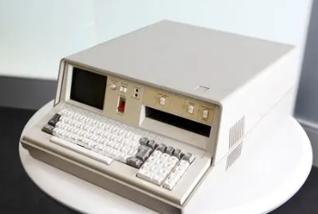

About Us
The Future Gadget Laboratory is a small, unconventional research facility where we push the boundaries of science and technology. Here, eccentric scientists explore the mysteries of time and create bizarre gadgets that challenge conventional physics. Our mission is to discover the secrets hidden within time and unlock the potential of our future.
Main Characters
Led by the self-proclaimed "Mad Scientist" Okabe Rintaro, our lab is home to brilliant minds including the genius neuroscientist Makise Kurisu, the expert hacker Daru, and the heartwarming Mayuri Shiina. Each member brings unique talents, fueling our wild experiments and adventures across time.
Gadgets & Experiments
From our infamous Phone Microwave (Name subject to change) to other experimental devices, our inventions may seem outlandish but are a step towards unraveling the mysteries of time travel and alternate realities. Every gadget is born from an unyielding passion for scientific discovery.
| Image | Name | Description |
|---|---|---|

|
Phone Microwave | Future Prop 8. A prop developed by combining a cell phone and a microwave oven, with the aim of trying to control the microwave oven remotely with the cell phone. However, it can neither remotely control the opening and closing of the door nor automatically organize the heated food. |
|  | IBN5100 | The IBN5100 was a desktop computer released by IBN in June 1975 and discontinued in March 1982. It integrated a CRT monitor, keyboard, CPU, tape drive, and system software, and was the original personal computer. Although it weighed 25 kilograms, it was already a portable and compact product at that time. |
| SERN | The official name of SERN is the European Common Research Organization for Nuclear Energy (CERN). However, “SERN” is not an abbreviation of the official name, but follows the abbreviation of its predecessor, “Société Européen pour la Recherche Nucléaire” (French: Société Européen pour la Recherche Nucléaire). |
Media & Highlights
Join Us
Are you fascinated by the mysteries of time and technology? Join the Future Gadget Laboratory and be part of our extraordinary experiments. For more information on our latest projects and to get in touch, visit our contact page.